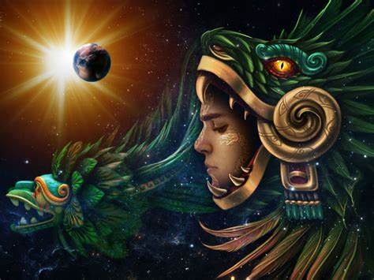
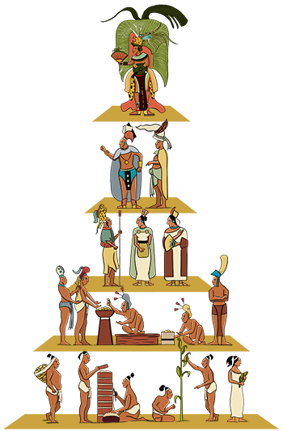
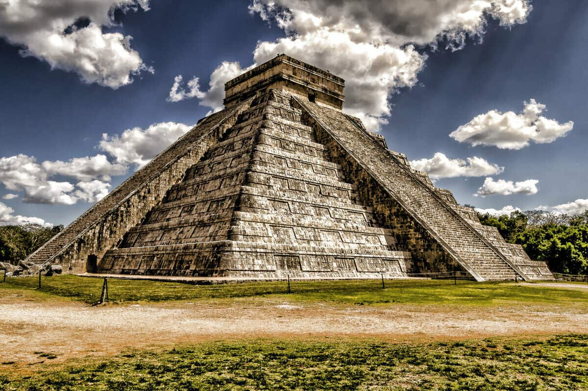

Los mayas fueron una de las civilizaciones más avanzadas y enigmáticas de Mesoamérica. Su origen se remonta al periodo Preclásico (alrededor del 2000 a.C.), pero su auge ocurrió en el periodo Clásico (250-900 d.C.), cuando construyeron grandes ciudades-estado en lo que hoy es el sureste de México, Guatemala, Belice, Honduras y El Salvador.
Las ciudades más importantes fueron Tikal, Palenque, Copán, Calakmul y Chichén Itzá. Destacaron por su arquitectura monumental, sus conocimientos avanzados en matemáticas y astronomía, y su complejo sistema de escritura jeroglífica.
Los mayas no conformaron un imperio unificado, sino que estaban organizados en ciudades-estado independientes que a menudo guerreaban entre sí.
Características Culturales y Sociales
La Sierra Tarahumara es una región montañosab> del estado de Chihuahua,
famosa por su difícil acceso y sus impresionantes barrancas, como la Barranca del Cobre,
que es más grande y profunda que el Gran Cañón de EE.UU.
Religión
Itzamná: Dios creador y de la sabiduría.
Chaac: Dios de la lluvia y el agua.
Kukulcán: La serpiente emplumada, asociada con el viento y la sabiduría.
Ah Puch: Dios de la muerte y el inframundo.

Organización Social

Halach Uinik (gobernante supremo): Dirigía la ciudad-estado y era considerado un intermediario entre los dioses y el pueblo.
Sacerdotes: Eran los encargados de los rituales, calendarios y conocimientos astronómicos.
Artesanos y campesinos: Constituían la mayoría de la población y eran responsables de la producción de bienes y la agricultura.
Esclavos: Prisioneros de guerra o deudores que realizaban trabajos forzados.
Sitios Arqueológicos Importantes
Algunos de los sitios más importantes de la cultura maya son:
obras
Tikal (Guatemala): Una de las ciudades más poderosas del periodo Clásico.
Chichén Itzá (México): Famosa por su pirámide de Kukulcán y su cenote sagrado.
Palenque (México): Conocida por sus templos decorados con inscripciones y el Templo de las Inscripciones.
Uxmal (México): Destacada por su arquitectura Puuc.
Copán (Honduras): Importante por sus estelas y esculturas talladas.

Idioma Maya
El idioma maya no era único, sino que existían varias lenguas derivadas del protomaya,
algunas de las cuales aún se hablan hoy en día. Entre las más importantes están:
🔹 idiomas
Yucateco: Hablado en Yucatán, Campeche y Quintana Roo.